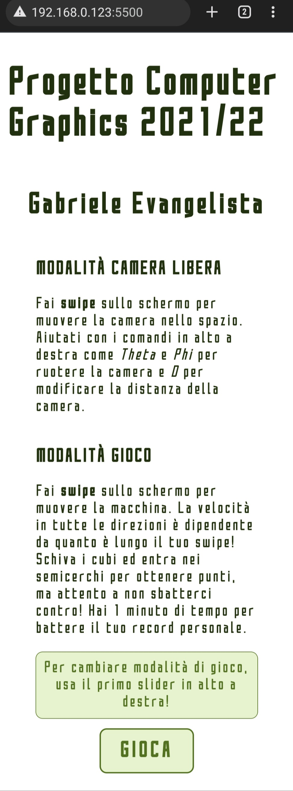
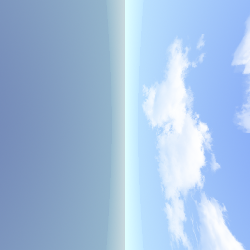
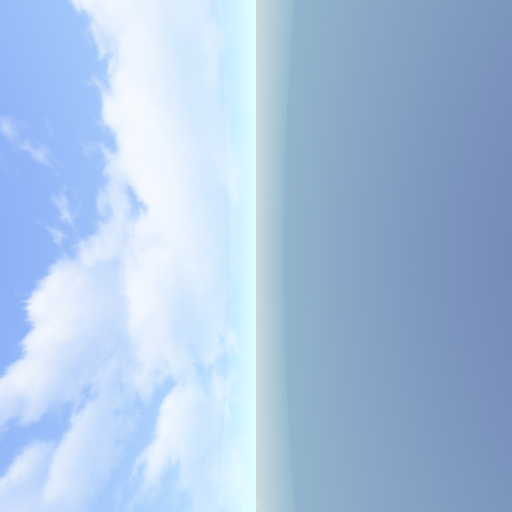
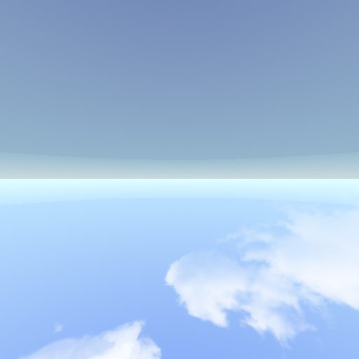
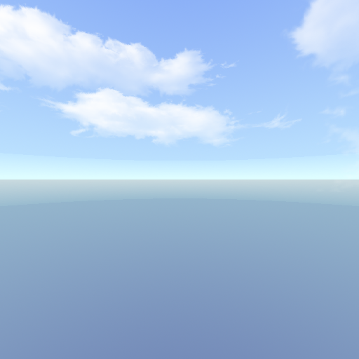
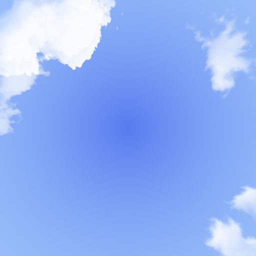
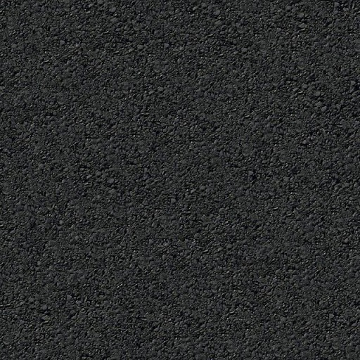
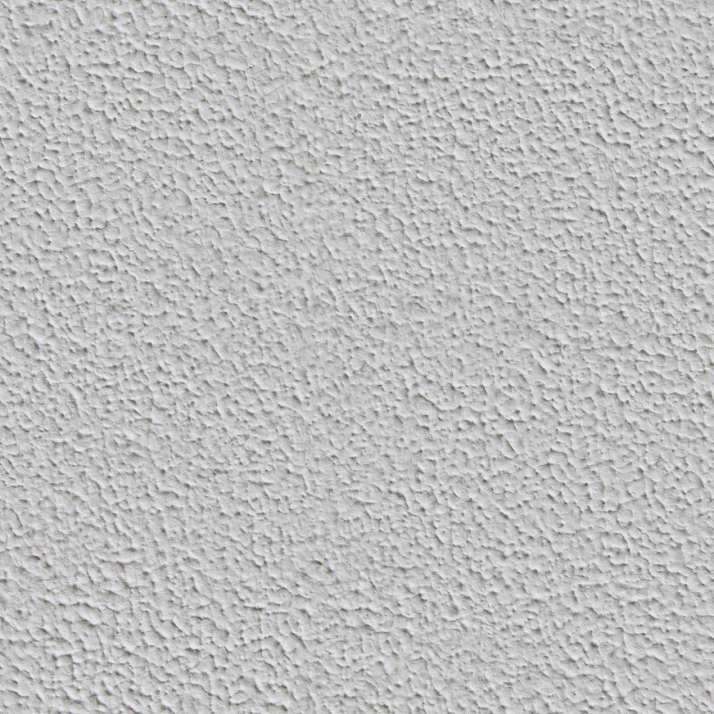
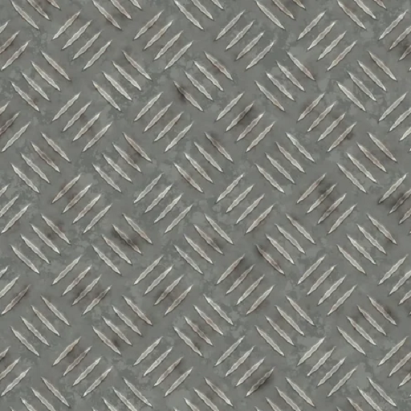
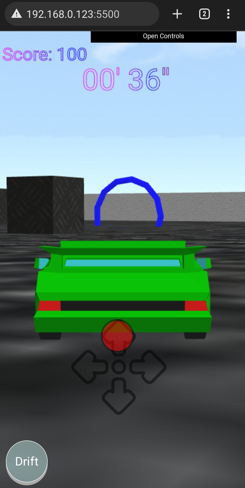

Tabella dei contenuti
1 - Introduzione
L'applicazione è un gioco 3D per browser interamente sviluppato attraverso JavaScript e WebGl.Schermata delle informazioni su computer:
 Schermata delle informazioni su dispositivo mobile:
Schermata delle informazioni su dispositivo mobile:

È possibile scegliere tra due modalità:
- Modalità camera libera: questa permette di visualizzare la scena spostando e ruotando la camera a piacimento.

- Modalità gioco: questa permette di giocare. Bisogna muovere la macchina e attraversare i semicerchi per ottenere punti evitando i cubi di ferro. Il punteggio verrà aggiornato finché il timer non arriva a zero. Per ricominciare la partita bisogna cambiare camera. È possibile scegliere tra due visualizzazioni: terza persona o dall'alto. È possibile inoltre scegliere quanti cubi di ferro devono essere sparsi per l'area di gioco attravero uno slider nei controlli in alto a destra.


2 - Creazione Asset
Per la creazione di tutti gli oggetti in scena è stato usato il programma Blender.2.1 - Macchina

2.2 - Ruote
 Le ruote sono state esportate separatamente dalla macchina in modo da poterle gestire diversamente. Queste infatti dovranno ruotare per andare avanti o indietro e la coppia delle ruote anteriori deve poter ruotare anche verso destra o sinistra.
Le ruote sono state esportate separatamente dalla macchina in modo da poterle gestire diversamente. Queste infatti dovranno ruotare per andare avanti o indietro e la coppia delle ruote anteriori deve poter ruotare anche verso destra o sinistra.
2.3 - Terreno

2.4 - Cerchi
 Il file circle.mat ha al suo interno 4 materiali, ciascuno di un colore diverso, in modo da poter generare randomicamente un cerchio di colore diverso.
Il file circle.mat ha al suo interno 4 materiali, ciascuno di un colore diverso, in modo da poter generare randomicamente un cerchio di colore diverso.
2.5 - Io

2.6 - Cubo di Ferro

2.7 - Muro
 Ho scelto di creare una "porzione" di muro unitaria in modo da poter rendere parametrica la dimensione dell'area di gioco.
Ho scelto di creare una "porzione" di muro unitaria in modo da poter rendere parametrica la dimensione dell'area di gioco.
2.8 - Skybox





Le immagini sono state prese da internet.
2.9 - Texture



Le texture del terreno, del muro e del cubo di ferro sono state prese da internet.
3 - Script
3.1 - Car
car.js è lo script che si occupa di disegnare e gestire la fisica della macchina. Definisce le seguenti funzioni:
InitCar(gl): funzione che carica la mesh e i materiali della macchina e delle route attraversoloadMesh.jse imposta una posizione, una rotazione e una scala a ciascun oggetto caricato.CarDoStep(): funzione che si occupa di gestire la fisica della macchina, come la posizione, la velocità, la rotazione (della macchina stessa e delle ruote).RenderCar(gl, program, opt): funzione che si occupa di disegnare ciascuna componente della macchina. Questa richiama la genericaRenderObject(gl, program, opt, data)contenuta inutils.jspassando le informazioni spaziali della componente.
3.2 - Cameras
cameras.js è lo script che si occupa di gestire la camera con la quale si osserva la scena. Sono disponibili tre tipi di camera diversi:
- Camera libera: permette di muoversi liberamente nello spazio usando i tasti W A S D, le frecce direzionali o il mouse per ruotare la visuale e la rotella del mouse per aggiustare la distanza dalla scena.
- Camera terza persona: permette di giocare e dunque di muovere la macchina usando i tasti W A S D. La camera è posizionata dietro la macchina.
- Camera dall'alto: anche questa permette di giocare ma la camera è posta in alto.
MoveCamera(): funzione che permette di muovere e ruotare la camera libera.SetCamera(): funzione che permette di impostare quale delle tre camere deve essere usata e aggiorna la sua posizione e il suo target.
3.3 - Ground
ground.js è lo script che si occupa di inizializzare e disegnare il terreno. Definisce le seguenti funzioni:
InitGround(gl): funzione che carica la mesh, il materiale e la texture del terreno attraversoloadMesh.jse gli imposta una posizione, una rotazione e una scalaRenderGround(gl, program, opt): funzione che si occupa di disegnare il terreno. Questa richiama la genericaRenderObject(gl, program, opt, data)contenuta inutils.jspassando le informazioni spaziali e le trasformazioni di esso.
3.4 - Me
me.js è lo script che si occupa di inizializzare e disegnare l'oggetto sul quale è disegnata la mia foto. Definisce le seguenti funzioni:
InitMe(gl): funzione che carica la mesh, il materiale e la texture dell'oggetto attraversoloadMesh.jse gli imposta una posizione.RenderMe(gl, program, opt): funzione che si occupa di disegnare l'oggetto. Questa richiama la genericaRenderObject(gl, program, opt, data)contenuta inutils.jspassando le informazioni spaziali di esso.
3.5 - Circle
circle.js è lo script che si occupa di inizializzare e disegnare i semicerchi in cui la macchina deve entrare. Definisce le seguenti funzioni:
InitCircle(gl): funzione che carica la mesh e i materiali attraversoloadMesh.jse richiamaRandomizeCircle().RandomizeCircle(): funzione che imposta una posizione al semicerchio all'interno del terreno e imposta un materiale a caso. La posizione viene generata usando la funzionegetRandomCoord()contenuta inutils.js. Quando la macchina entra nel cerchio, questi dati vengono impostati nuovamente in modo randomico.RenderCircle(gl, program, opt): funzione che si occupa di disegnare l'oggetto e di gestire le collisioni con la macchina. Questa richiama la genericaRenderObject(gl, program, opt, data)contenuta inutils.jspassando le informazioni spaziali di esso.
3.6 - Wall
wall.js è lo script che si occupa di inizializzare e disegnare i muri che racchiudono l'area di gioco. Definisce le seguenti funzioni:
InitWall(gl): funzione che carica la mesh e i materiali attraversoloadMesh.jse inizializza i vettori che rappresentano le mura.RenderWall(gl, program, opt): funzione che si occupa di disegnare le mura e di gestire le collisioni con la macchina. Questa richiama la genericaRenderObject(gl, program, opt, data)contenuta inutils.jspassando le informazioni spaziali di esso.
3.7 - Cubes
iron-cube.js è lo script che si occupa di inizializzare e disegnare i cubi di ferro che vengono sparsi nell'area di gioco. Definisce le seguenti funzioni:
InitCubes(gl): funzione che carica la mesh e i materiali attraversoloadMesh.jse inizializza il vettore delle posizioni di ogni cubo usando la funzioneRandomizeCubes().RandomizeCubes(): funzione che utilizza a sua voltagetRandomCoord()contenuta inutils.jsper impostare a ogni cubo una posizione libera.RenderCubes(gl, program, opt): funzione che si occupa di disegnare i cubi di ferro e di gestire le collisioni con la macchina. Questa richiama la genericaRenderObject(gl, program, opt, data)contenuta inutils.jspassando le informazioni spaziali di esso.
3.8 - Utils
utils.js è uno script che contiene diverse variabili utili per giocare, definisce i selettori con i quali è possibile interagire con la scena e contiene diverse funzioni:
RenderObject(gl, program, opt, data): usata da tutti gli altri componenti per fare il render di un oggetto.define_gui(): usata per disegnare i selettori in alto a destra.getRandomCoord(): usata per ottenere una x e una y casuali libere (non occupate da altri oggetti) nell'area di gioco.addScore(): usata per aumentare il punteggio di gioco quando si entra in un semicerchio.subtractScore(): usata per diminuire il punteggio di gioco in seguito a una collisione.refreshScore(): usata per disegnare il nuovo punteggio sul canvas.pad(): usata per ottenere un numero con 2 cifre (aggiunge dunque uno 0 all'inizio se il numero ha solo una cifra).drawTime(): usata per disegnare tempo sul canvas.updateTime(): usata per aggiornare il tempo, viene richiamata ogni secondo.startGame(): usata per fare partire il gioco.stopGame(): usata per fare terminare il gioco.
3.9 - Main
main.js è lo script principale che permette il funzionamento dell'app. Contiene diverse funzioni:
- Quando l'oggetto
documentè nello statusreadyper prima cosa cambia la schermata principale se si è su un dispositivo mobile e poi gestisce l'inizio del gioco in seguito al click sul bottoneGioca. EventsHandler()eTouchEventsHandler(): si occupano di gestire gli input dell'utente (siano essi provenienti da tastiera, mouse o touchscreen).CheckStartGame(): si occupa di far partire il gioco se l'utente dà un input in modalità gioco.createXYQuadVertices(): si occupa di generare il cubo su cui viene mappato lo Skybox.
LoadMesh(gl, obj). La componente ambiente viene stabilita come variabile globale e le componenti luce diffusa e speculare vengono calcolate all’interno del fragment shader.
3.10 - Funzioni di terze parti
load_mesh.js: usa a sua voltaglm_utils.jsemesh_utils.jsper poter caricare le mesh, i materiali e le texture degli oggetti.ui_components.js: usa a sua voltadat.gui.jsper poter generare i selettori in alto a destra.m4.js: libreria JavaScript che definisce funzioni matematiche su matrici 4×4.jquery-3.6.0.js: libreria JavaScript.
4 - User Input
4.1 - Computer
Se si utilizza un dispositivo che dispone di tastiera e mouse è possibile utilizzare:- I tasti
W,A,SeD: nella modalità camera libera spostano la camera, rispettivamente, in avanti, a sinistra, indietro e a destra; nella modalità gioco permettono di muovere la macchina nelle stesse direzioni. - I tasti
↑,←,↓e→: funzionano solo nella modalità camera libera e permettono di ruotare la camera, rispettivamente, verso l'alto, sinistra, in basso e a destra. - Il tasto
Spazio: funziona solo nella modalità di gioco e permette di azionare il freno a mano. Click destro del mouse: permette di ruotare la camera in base ai movimenti del mouse.Rotella del mouse: permette di diminuire o di aumentare la distanza della camera dalla scena.
4.2 - Mobile
Se si utilizza un dispositivo mobile, e dunque non si ha a disposizione un mouse e una tastiera, è possibile interagire attraverso il touch screen.Cliccando sullo schermo compare un gamepad e, attravero lo swipe, è possibile muovere nella direzione desiderata la camera o la macchina.
Per poter ruotare la camera è necessario utilizzare i controlli disponibili in alto a destra e modificare Theta e Phi.
È disponibile anche il bottone
Drift il quale permette di azionare il freno a mano.

5 - Rendering avanzato (opzionale)
All'oggetto sul quale sono disegnato può essere cambiata la trasparenza utilizzando, nei controlli in alto a destra, la barramyTransparency. Per poter ottenere questo risultato, l'oggetto in questione è l'ultimo ad essere disegnato e sono state usate funzioni specifiche di WebGl: gl.enable(gl.BLEND), gl.depthFunc(gl.LESS) e gl.blendFunc(gl.SRC_ALPHA, gl.ONE_MINUS_SRC_ALPHA).

6 - Sviluppi futuri
Alcuni miglioramenti futuri possono essere:- Migliore gestione delle collisioni: attualmente le collisioni funzionano ma non molto bene vicino agli estremi dell'oggetto.
- Rotazione di ostacoli e dei semicerchi: attualmente i cubi di ferro e i semicerchi non vengono ruotati in modo randomico. Una possibile miglioria è quella di prevedere questa possibilià e gestire di conseguenza le collisioni.